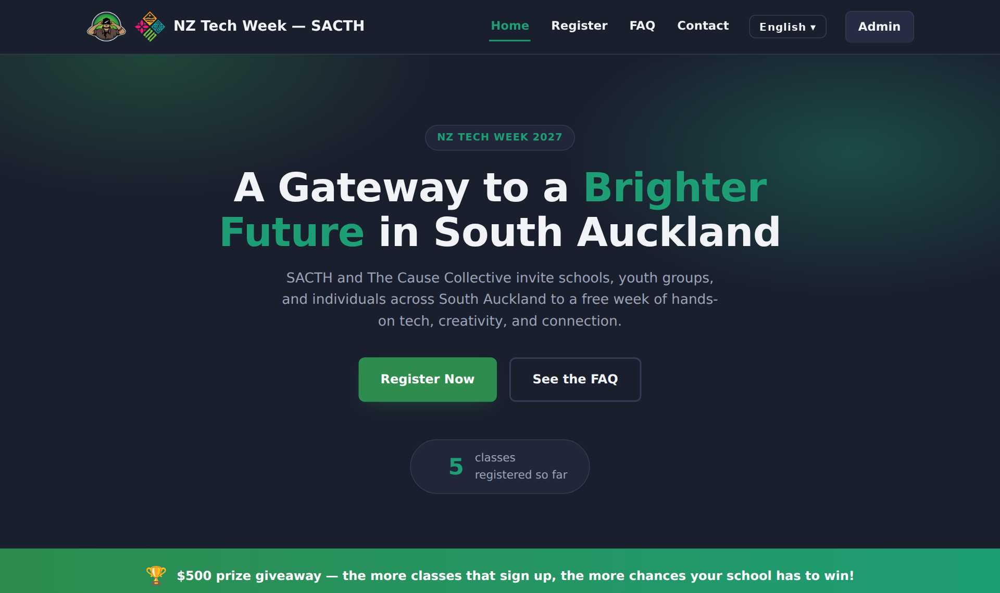
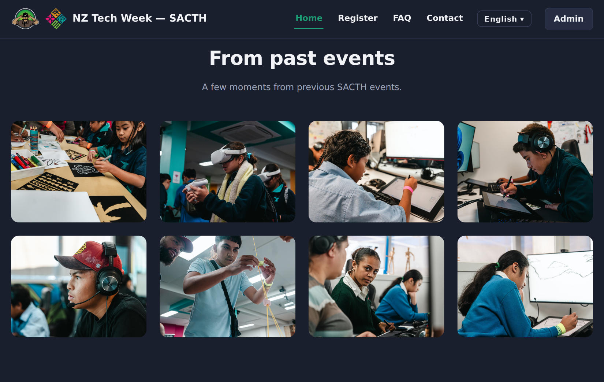
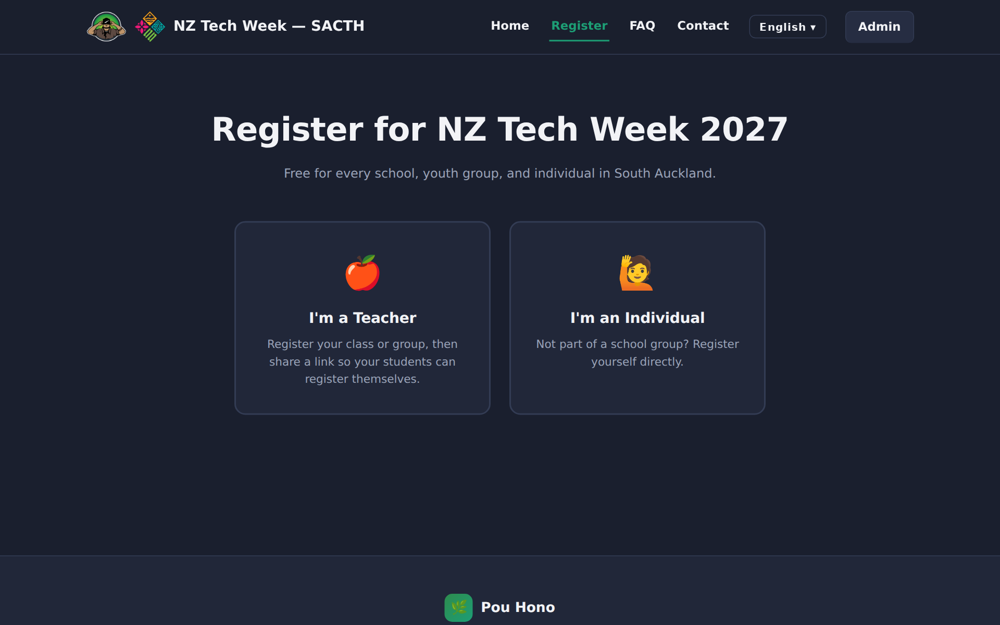
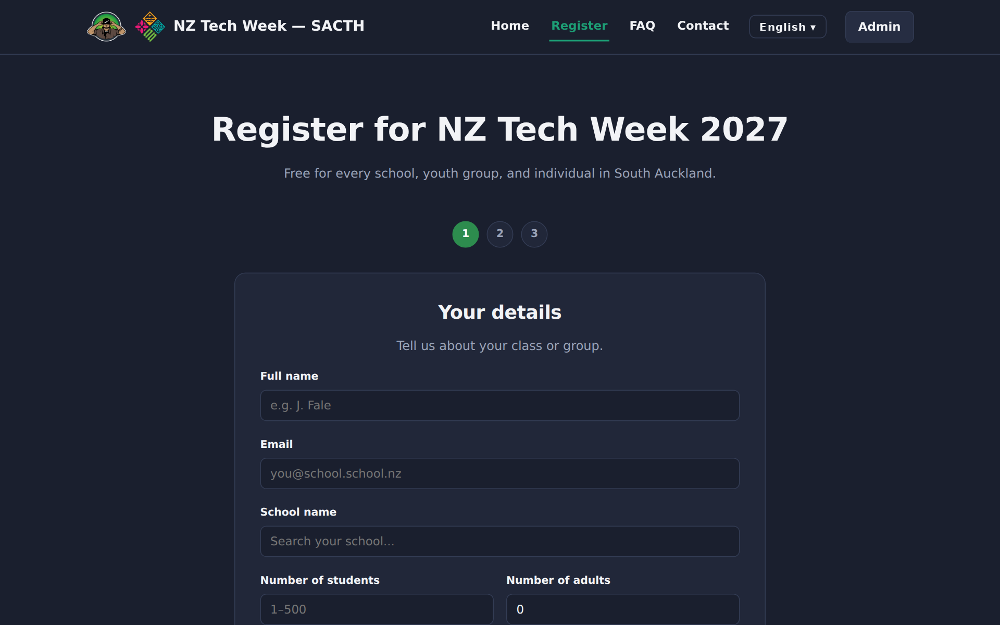
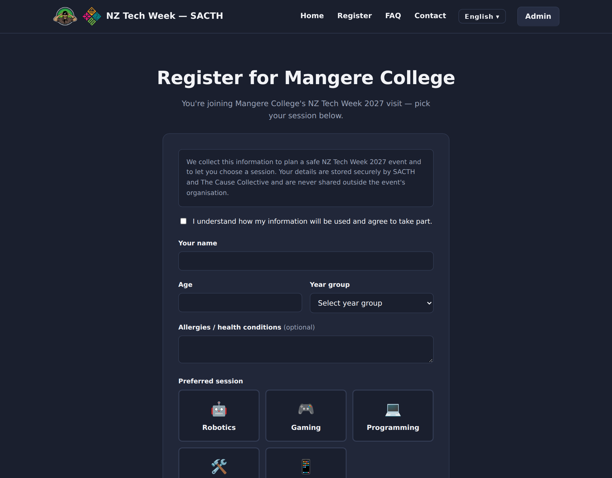
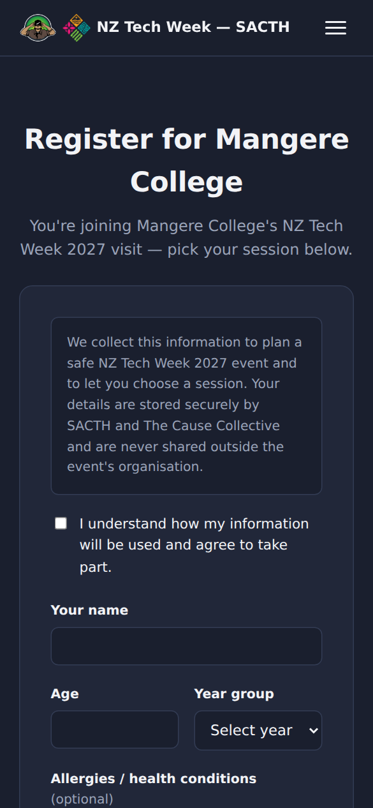
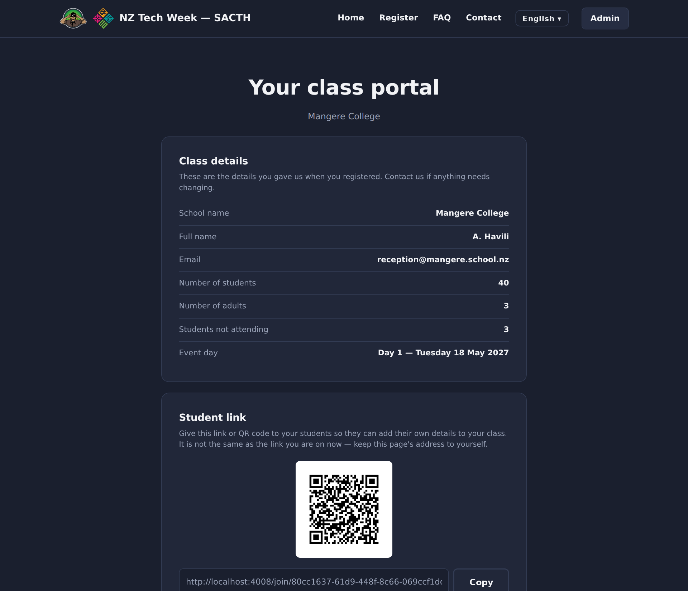
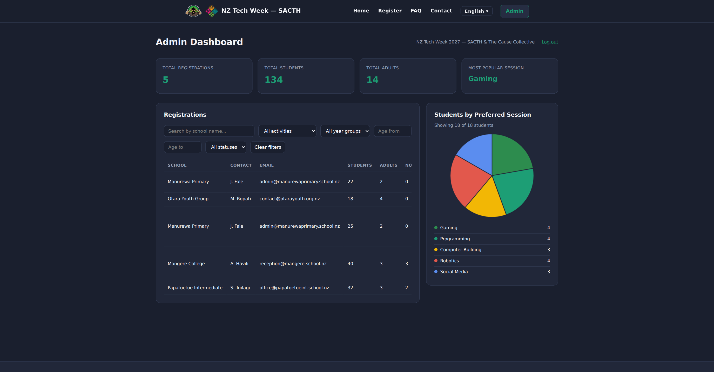
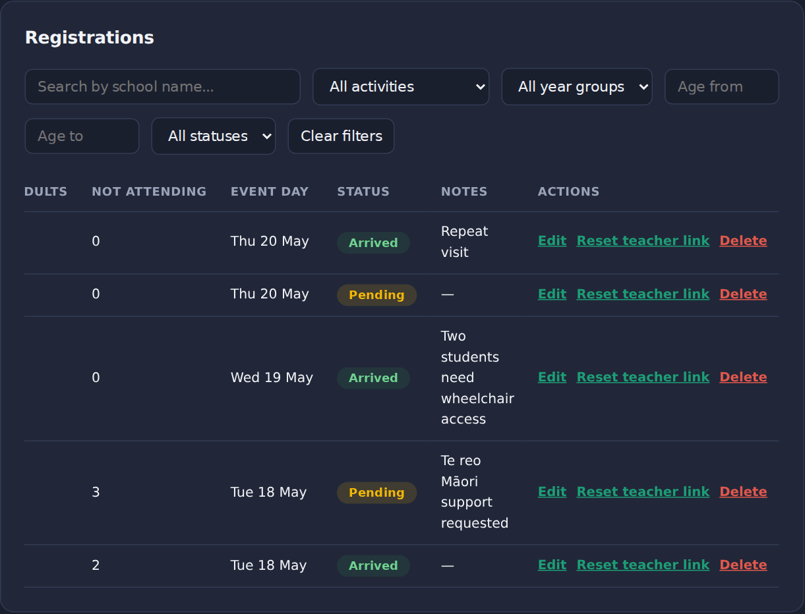
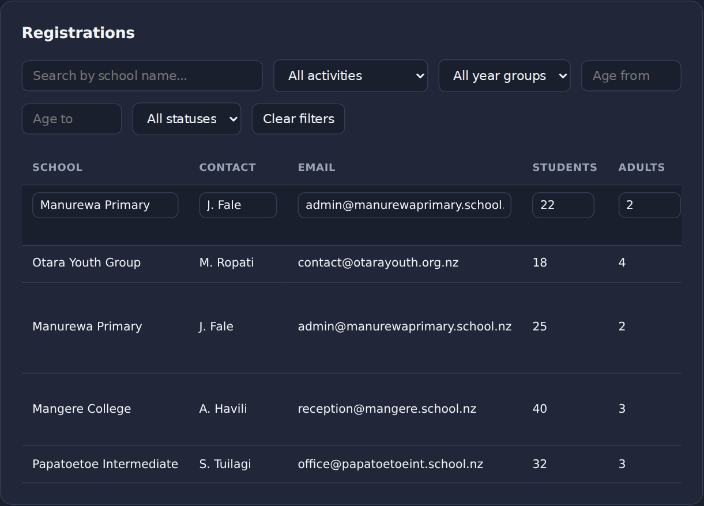

Part A is written for SACTH and The Cause Collective and needs no technical knowledge. Part B is a reference for whoever maintains or hosts the website next.
Pou Hono is the registration website for NZ Tech Week 2027, run by SACTH and The Cause Collective for South Auckland schools, youth groups and individuals.
A teacher registers their class and is given two things: a link and QR code to share with their students, and a private link to their own class portal. Students open the shared link and register themselves, and they are grouped under their teacher's class automatically. Teachers can also type students in themselves. Individuals who are not part of a school group can register on their own. SACTH staff see everything in a password-protected admin dashboard and use it to check classes in on the day.
The website collects children's names, ages, year groups and allergy or health information. Rather than putting that into a third-party sign-up service, Pou Hono keeps all of it in a single database file that sits with the website itself. Nothing is sent to an outside data service. This is the data sovereignty reason the project exists, and it shaped most of the design decisions in this document.
A security and functional review on 5 October 2026 found and fixed 15 issues, plus one tidy-up. The fixes are on separate branches on GitHub, waiting for the development team to review and merge them (section 15). This document describes the website with those fixes merged.
Everything below is working in the current version. Screenshots are in Appendix A.
| Who | What they can do |
|---|---|
| Anyone visiting Home, FAQ |
|
| Teachers Register page |
|
| Teacher class portal Private link |
Shows the class details, the student link and QR code again, every student signed up so far (including allergies), a form to add a student by hand, and a button to remove a student. |
| Students Shared link / QR |
A short form: name, age, year group, allergies or health conditions (optional) and preferred session. Before submitting they agree to a short statement about how their information is used. Works well on a phone. |
| Individuals | Choose "I'm an Individual" on the Register page and fill in the same short form, without needing a school or teacher. |
| SACTH staff (admin) Admin dashboard |
|
The Register, student sign-up and teacher portal pages can be switched between English, te reo Māori, gagana Sāmoa and lea faka-Tonga with the language menu in the header. The home page, FAQ and admin dashboard are English only.
The Māori, Samoan and Tongan text was produced with AI and has not been checked by fluent speakers. It must be reviewed by someone fluent in each language before the site is used with real families. See section 6.
The full journey, from a teacher signing up to a class arriving on the day.
When a teacher registers, the website creates two long random codes for the class, one for each link:
| Link | Who it is for | What it can do |
|---|---|---|
…/join/<student code> | Students. Share with the class or print as a QR code. | Adds a student to that class and shows its school name. It can't open the teacher portal or show student details. |
…/register/<teacher code> | The teacher only. Do not share. | Opens the teacher's class portal: the class list, including allergies, and adding or removing students. |
There are no teacher accounts or passwords. Having the teacher code is the permission, so a teacher can start straight away with nothing to set up. The codes are far too long to guess. If a portal link is lost or shared by mistake, an admin can reset it from the dashboard: the old link stops working immediately, and the student link and QR code keep working.
Behind the scenes, everyone who registers as an individual is grouped under one shared record called "Individual / Walk-in". It never appears as a class in the admin table, and it can never open a teacher portal. Individual sign-ups are still counted in the dashboard figures and the session chart.
The website holds children's personal and health information, so access is deliberately tight.
| Level | Can | Cannot |
|---|---|---|
| Public anyone | Register a class. Sign a student up, if they have a valid student link. | See student or teacher details. A student link shows the school name; the home page receives only a count. |
| Teacher has a portal link | See and manage their own class only. | See or change any other class, or the individual sign-ups. |
| Admin has the password | See and manage everything. | — |
.env) private. It holds the password hash and the secret key.The site is online at a free Vercel address, but only the pages are live: registrations can't work there. This section explains the current setup, where to move it, and every account SACTH needs to own.
| Item | Current state (checked 5 October 2026) |
|---|---|
| Web address | https://pou-hono-site.vercel.app. This is a free sub-address of Vercel's own domain, so SACTH cannot buy or independently own it. A project transfer may preserve the address; confirm this with Vercel before relying on it. |
| Where it runs | A Vercel project, serving the pages through Vercel's global network. |
| Who owns it | Deployed from the GitHub repository Melware0-0/PouHonoSite. The live pages are byte-for-byte identical to the current main (commit e0700be, "Deploy"). Vercel's free Hobby plan is for personal, non-commercial use. [confirm account and plan with the team member who set it up] |
| What it serves | Only the public/ folder, as a static website: the home page, FAQ, the forms and the admin login screen all display. The server part of the website isn't running: every /api/… address returns Vercel's "NOT_FOUND" page. |
| What that means | Registering a class, student sign-up, the teacher portal, admin login and the home page counter all fail on the live site. No registration data is stored on Vercel. Server files (server.js, .env, the database) are not exposed. |
Pou Hono keeps all its data in one database file beside the website. Vercel runs server code as short-lived "serverless" functions on a read-only file system. The only writable space is temporary, gets wiped, and isn't shared between copies of the site. So even with the server part enabled, registrations would fail to save or quietly disappear. Vercel says this in its own guidance on SQLite. Vercel suits the pages, not the data. (Provider details in this section are from vercel.com/docs, docs.railway.com, internetnz.nz and docs.github.com, October 2026; confirm before signing up.)
| ☐ | A Node.js server that keeps running (version 22 or 24), not serverless functions. |
| ☐ | Permanent disk storage (a "volume") that survives restarts and redeployments, for the database file. |
| ☐ | HTTPS and a custom domain name. |
| ☐ | Private settings (environment variables) for the admin password hash and secret key. |
| ☐ | Backups of the volume, or a way to copy the database file off regularly. |
| ☐ | Ideally: servers in New Zealand or Australia, in line with the data-sovereignty goal. |
Railway runs Pou Hono as it is, with a permanent volume, HTTPS and custom domains built in. Its nearest region is Singapore; it has no NZ or Australian region, so the data would be held offshore. If keeping data onshore is a must, use any NZ or Australian host that meets 5.2; the same steps apply.
npm start./data. Choose the Singapore region before adding it, because moving a volume between regions later causes downtime. Run a single instance: the database is one file.NODE_ENV=production, ADMIN_PASSWORD_HASH, SESSION_SECRET, DATABASE_PATH=/data/pou-hono.db, TRUST_PROXY=1, and PUBLIC_BASE_URL=https://<your domain>. Generate the hash and secret fresh (section 13). The last three come from the fix branches in section 15. After deploying, confirm the rate limits see real visitor addresses. Let the host set PORT.CNAME and a TXT record. Add both at the domain's DNS provider; the domain won't verify with the CNAME alone. Railway then issues the HTTPS certificate automatically, though DNS changes can take up to 72 hours.| Asset | Today | How SACTH takes ownership |
|---|---|---|
| Domain name | None. pou-hono-site.vercel.app belongs to Vercel. |
Simplest: use a sub-address of an existing domain controlled by SACTH, e.g. register.sacth.nz if SACTH controls it. Nothing to buy; whoever manages sacth.nz's DNS adds Railway's two records. Or buy a new name (e.g. a .nz or .org.nz) from any authorised .nz registrar (InternetNZ, which runs .nz, doesn't sell directly). Register it in SACTH's or The Cause Collective's legal name, never a developer's; turn on auto-renew; keep the registrar login with SACTH. |
| Source code (GitHub) | Repository namespace Melware0-0; confirm its owner and transfer authority. |
SACTH creates a free GitHub organisation. The current owner uses Settings → Transfer ownership on the repository to move it there; GitHub redirects the old address. Developers stay on as collaborators. Agree code ownership and licence in writing; there is no licence file. |
| Hosting | Vercel; account ownership needs confirmation. | Create the Railway project under SACTH's account from the start (5.3). If Vercel is kept for anything, move the project to a SACTH-owned Vercel team with Project Settings → General → Transfer Project (the sender must own the source team and be a member of the receiving one). Otherwise delete it. |
| Admin password & secret key | Not recorded in the repository; confirm who holds development credentials. | SACTH generates its own for production, stores them in a password manager, and enters them only in the host's settings. After handover, rotate both so no developer holds live credentials. |
| The data | None live yet. | Once live, the data is the single database file on the volume. SACTH owns it and its backups, decides how long it's kept (section 7), and controls who can download it. |
| Billing & recovery | — | Every account above (registrar, GitHub organisation, Railway) uses a shared SACTH email with at least two SACTH owners, so access doesn't depend on one person. |
Nothing here needs new features built. These are decisions, content and setup.
| Action | Why | Who | |
|---|---|---|---|
| ☐ | Choose hosting and deploy (section 5) | Vercel cannot keep registrations. | SACTH + developer |
| ☐ | Review and merge the 14 fix branches (section 15) | They contain the security fixes this document assumes. | Developer |
| ☐ | Confirm the three event dates | The current dates, Tuesday 18 to Thursday 20 May 2027, are placeholders. | SACTH |
| ☐ | Fluent-speaker review of te reo Māori, gagana Sāmoa and lea faka-Tonga | The current text is AI-generated and unchecked. | SACTH |
| ☐ | Set the real admin password | The brief's example password, SACTH2027, is publicly known and must not be used anywhere. | Developer |
| ☐ | Clear the demo data | The site creates five example schools and eighteen example children on a new database, so the dashboard can be demonstrated. | Developer |
| ☐ | Review the wording of the teacher terms, the student consent statement and the FAQ answers | These are legal and safety statements made in your name. | SACTH |
| ☐ | Confirm the $500 prize giveaway banner on the home page | It is a public promise. | SACTH |
| ☐ | Privacy and consent (section 7) | The site collects children's health information. | SACTH |
| ☐ | Decide who holds the admin password and fill in section 9 | So someone owns the system after handover. | SACTH |
| ☐ | Merge the school-name search (section 8) | It is built, but not yet part of the main version. | Developer |
These are the edges of what was in scope, listed so nobody is surprised by them.
The website collects children's names, ages and health information, which puts it under the NZ Privacy Act 2020. The following are not yet in place:
We recommend SACTH settle these before registrations open. Building a privacy page and a consent tick-box is a small piece of work once the wording is agreed.
These were either handled separately, deliberately left out, or are built but not yet switched on.
| Item | Status | Notes |
|---|---|---|
| School-name search on the teacher form | built, not merged | The "Search your school…" box is a plain text field in the main version. A finished search over South Auckland school names exists on a separate branch (schoolsearch) and needs merging and testing. |
| Production hosting and deployment | to do | See section 5. |
| Confirmation email to teachers | not in scope | Handled separately. No email is sent today. Teachers must copy their links from the confirmation screen. |
| Load testing to 1,000 users | not in scope | Recommended before launch if large numbers are expected at once. |
| Uploading paper forms | not in scope | The database has space to record a file name, but no upload feature exists and no files are stored. |
To be completed by SACTH and the developer at handover.
| Role | Name and contact |
|---|---|
| Project owner (SACTH / The Cause Collective) | [name, email, phone] |
| Holder(s) of the admin password | [names] |
| Hosting account owner | [provider, account owner, billing contact] |
| Domain name owner | [domain, registrar, account owner] |
| GitHub repository owner | [account / organisation] |
| Technical support after handover | [name, email, support terms] |
| Translation reviewers | te reo Māori: [name] gagana Sāmoa: [name] lea faka-Tonga: [name] |
| Public contact email on the website | sacth@thecausecollective.org.nz. Confirm this is correct. |
README.md and CLAUDE.md cover the same ground and should be kept up to date alongside the code.Node.js + Express 5, a single-file SQLite database via better-sqlite3, and plain HTML/CSS/JavaScript served as static files. No framework, no bundler and no build step: you edit a file and reload the page.
Browser Server
┌─────────────────────────┐ fetch() ┌────────────────────┐ ┌──────────────┐
│ public/*.html │ ──────────► │ server.js │ ─► │ pou-hono.db │
│ forms, QR, dashboard │ ◄────────── │ Express + REST API │ ◄─ │ SQLite file │
└─────────────────────────┘ JSON │ auth, validation │ └──────────────┘
└────────────────────┘| File | Purpose |
|---|---|
server.js | The entire back end: Express app, security headers, static serving of public/, rate limiters, the requireAdmin and requireTeacherToken middlewares, validation, every route, and the final error handler. |
db.js | Opens the database at DATABASE_PATH or next to itself (WAL mode, foreign keys on), creates the schema including admin_sessions, adds missing columns (not_attending, is_walk_in, teacher_token), backfills teacher tokens, creates the walk-in container, and seeds demo data on an empty database. (The token-column migration for very old databases is on origin/schoolsearch.) |
public/index.html | Home page: hero, live counter, sessions, prize banner, photo gallery with lightbox, map. |
public/register.html | Teacher path (3 steps) and the entry point for the individual path. |
public/teacher.html | Teacher class portal, served at /register/:token. |
public/student.html | Student sign-up, served at /join/:token, or directly for individuals. |
public/admin.html | Admin dashboard (login gate, stats, filters, table with edit, reset teacher link and delete, Chart.js pie chart). |
public/vendor/ | Self-hosted Chart.js and its licence. |
public/faq.html | FAQ. |
public/nav.js | Injects the shared header (logos, menu, language picker) and footer into every page. |
public/translations.js | UI strings in en, mi, sm, to, applied via data-i18n and data-i18n-placeholder attributes. |
public/event-days.js | The three event dates. Loaded by both Node (require) and the browser (<script>), so they are defined once. |
public/styles.css | Shared styles. |
public/images/ | The SACTH and The Cause Collective logos and eight event photos. |
.env.example | Committed template for the settings file, with the commands to generate each value. |
Dependencies (package.json): express, better-sqlite3, bcryptjs, cookie-parser, express-rate-limit, qrcode, dotenv. The only browser library is Chart.js 4.4.1, self-hosted at public/vendor/chart.umd.js with its MIT licence.
One SQLite file, pou-hono.db, created on first run next to db.js, or wherever DATABASE_PATH points (on a host, the persistent volume). It is gitignored and is the only place data lives.
registrations: one row per class (plus the walk-in container)| Column | Type | Notes |
|---|---|---|
id | INTEGER PK | Auto-increment. |
school, contact, email | TEXT NOT NULL | Teacher's details. school is display text only, not an identity. |
students, adults | INTEGER | Booked numbers (1–500 and 0–200). |
not_attending | INTEGER, default 0 | How many of the booked students won't come. Head count = students − not_attending. |
session | TEXT | Always 'NZ Tech Week 2027' for public registrations. Per-student session choices live on students. |
date | TEXT YYYY-MM-DD | Event day. Stored in this format so it sorts and compares as plain text. Public registrations must use one of the days in event-days.js, but admin edits may use any real date. |
notes, file_name | TEXT | file_name is only a string. No file is stored. |
status | TEXT, CHECK | 'Pending' or 'Arrived'. |
token | TEXT UNIQUE | The student sign-up code (crypto.randomUUID()), used in /join/… links. It can only add a student. The walk-in container's token is public and is returned by /api/walk-in-registration. |
teacher_token | TEXT, unique index | The teacher portal credential, used in /register/… links and the teacher API. Returned only in portalLink at registration and by the admin reset route. NULL for the walk-in container. Backfilled with a fresh value for older rows on upgrade. |
is_walk_in | INTEGER 0/1 | 1 only for the shared "Individual / Walk-in" container. A partial unique index guarantees at most one; startup code creates one if absent. |
students: one row per signed-up student| Column | Type | Notes |
|---|---|---|
id | INTEGER PK | |
registration_id | INTEGER FK | ON DELETE CASCADE: deleting a class deletes its students. |
name | TEXT NOT NULL | |
age | INTEGER, nullable | 1–120 if given (individuals include adults). |
year_group | TEXT | Year 1 … Year 13, or 18+. |
allergies | TEXT | Free text. Treat as sensitive health information. |
preferred_session | TEXT | Robotics, Gaming, Programming, Computer Building, or Social Media. |
created_at | TEXT | Set by SQLite. |
admin_sessions: one row per admin sign-inid (random 32-byte hex, also the signed cookie value), created_at, expires_at (8 hours on), and password_fingerprint (a hash of the configured password hash, so changing the password ends every session). Rows are deleted on logout; expired rows are removed on session checks or a later login.
db.js runs on every start. The not_attending, is_walk_in and teacher_token columns are in the CREATE TABLE and added through addColumnIfMissing(...); the admin_sessions table is created if missing. Main does not yet migrate databases missing token; that fix is on schoolsearch. Review that migration before starting against a very old database.is_walk_in flag have their existing "Individual / Walk-in" row marked automatically. The container cannot be edited (apart from status) or deleted through the API.Every route sits behind exactly one of three gates. When adding a route, decide its gate first.
requireTeacherToken reads the teacher token from Authorization: Bearer <token> or ?token=, looks it up by teacher_token only, loads that registration into req.registration, and scopes queries to it. A missing, unknown, student or walk-in token all return the identical 404.requireAdmin checks the signed, httpOnly cookie pou_hono_admin (SameSite=Lax, Secure when NODE_ENV=production). Its value is a session id that must exist in admin_sessions, be unexpired (8 hours), and match the current password fingerprint. It is set after a bcrypt compare in POST /api/admin/login.| Method | Route | Gate | Purpose |
|---|---|---|---|
| POST | /api/admin/login | public | Admin login. Rate limited to 10 attempts per 15 min per IP. |
| POST | /api/admin/logout | public | Deletes the server session and clears the cookie. |
| GET | /api/admin/session | public | Reports { authenticated }. |
| GET | /api/admin/students | admin | Every student in one query. |
| GET | /api/registrations | admin | All registrations (no token column). |
| PUT | /api/registrations/:id | admin | Full edit, or { status } only for check-in. |
| POST | /api/registrations/:id/teacher-link | admin | Issue a new teacher token (old portal link stops working); returns { portalLink }. 409 for the walk-in container. |
| DELETE | /api/registrations/:id | admin | Delete a class and, through the cascade, its students. |
| GET | /api/registrations/:id/students | admin | One class's students. |
| POST | /api/registrations | public | Teacher registers a class. Returns the record plus link (student), portalLink (teacher) and qrCode. 20 per hour per IP. |
| GET | /api/registrations/count | public | Home page counter (excludes walk-in). |
| GET | /api/registrations/token/:token | public | School name and isWalkIn only, for the student page heading. |
| GET | /api/walk-in-registration | public | The walk-in container's token, which is public by design. |
| POST | /api/registrations/token/:token/students | public + token | Student sign-up with the student token. 600/hour per IP ceiling, then 100/hour per IP + class (60 for the walk-in token). |
| GET | /api/my-registration | teacher | The teacher's own record. |
| GET | /api/my-registration/qr | teacher | Student link (built from the student token) and QR code. |
| GET | /api/my-registration/students | teacher | Their students. |
| POST | /api/my-registration/students | teacher | Add a student by hand. 200 per hour per class. |
| DELETE | /api/my-registration/students/:studentId | teacher | Remove one of their own students only (scoped by registration_id). |
Routes for the admin's per-student edit and remove were added after commit e0700be and should be added to this table [route list to be added].
/join/:token (student token) serves student.html. /register/:token (teacher token) serves teacher.html. An unknown token on either, including a student token on /register/, redirects to /. The public walk-in token on /register/ redirects home too; a teacher credential wrongly assigned to that container gets a plain 404. Every other page is served statically from public/.
Every response carries Referrer-Policy: no-referrer, X-Content-Type-Options: nosniff, X-Frame-Options: DENY and a Content-Security-Policy. /api responses are Cache-Control: no-store. Unknown /api paths return a JSON 404. A final error handler returns a generic JSON message (413 for oversized bodies) and never a stack trace. Share and portal links use PUBLIC_BASE_URL when it is set.
db.prepare(...) with ? or named placeholders. Fixed queries may have no parameters; schema SQL uses db.exec. Only trusted, code-defined column lists and migration identifiers are interpolated.registrations (see REGISTRATION_COLUMNS), never SELECT *, so a new column can't leak.is_walk_in via isWalkInRegistration(), never by its school name, and must never pass requireTeacherToken.innerHTML goes through the page's escapeHtml helper, or is set with textContent. escapeHtml does not escape quotes, so it must not be used inside HTML attributes.teacher_token must never be added to REGISTRATION_COLUMNS.npm install # Node.js 22 or 24 (20 and 22–26 supported; not 18 or 21)
cp .env.example .env # Windows: copy .env.example .env, then fill in the values below
node server.js # or: npm start → http://localhost:3000.env or the host's environment variables)| Variable | Value |
|---|---|
ADMIN_PASSWORD_HASH | bcrypt hash of the admin password. Generate it with:node -e "console.log(require('bcryptjs').hashSync(process.argv[1], 10))" 'NewPassword' |
SESSION_SECRET | Long random string that signs the admin cookie. Generate it with:node -e "console.log(require('crypto').randomBytes(32).toString('hex'))" |
PORT | Optional. Defaults to 3000. Most hosts set this automatically. |
NODE_ENV | Set to production on the live server, which makes the admin cookie HTTPS-only. |
DATABASE_PATH | Optional. Where the database file lives. Default: next to db.js. On a host, use the persistent volume, e.g. /data/pou-hono.db; its folder must exist. |
TRUST_PROXY | Optional. Set when running behind a host's proxy so rate limits see real visitor addresses: a hop count such as 1, or an Express trust-proxy value. Match the proxy layout; trusted proxies must overwrite forwarding headers. |
PUBLIC_BASE_URL | Optional. The canonical address used to build share links, portal links and QR codes, e.g. https://register.sacth.nz. Unset uses the request's own address. |
If either secret is missing, the server starts with a warning and admin login refuses every attempt.
ADMIN_PASSWORD_HASH, restart. Every existing admin session ends automatically.SESSION_SECRET and restart. This also signs everyone out.pou-hono.db does not give an empty site. On restart, db.js sees an empty database and inserts the demo data again. Either (a) recommended: disable the two seed blocks in db.js before the production server's first start, or (b) on the live site, delete the five example classes in the admin dashboard (which removes their students) and remove the two example individual sign-ups. The class seed runs only when the registrations table has zero rows; the retained walk-in container prevents reseeding even before real classes exist. The student seed also requires classes to have been seeded on that same startup and an empty students table.pou-hono.db) together with its -wal and -shm files. The next start rebuilds the schema and the demo data.pou-hono.db while the server is running. Either stop the server first, or take a consistent copy with sqlite3 pou-hono.db ".backup backup-YYYY-MM-DD.db". Use the configured database path. Schedule daily during registration; keep copies off the server.| ☐ | All 14 fix branches merged (section 15). |
| ☐ | Host with a long-running Node process and a persistent volume; DATABASE_PATH points into it (section 5). Run a single instance. |
| ☐ | NODE_ENV=production, fresh ADMIN_PASSWORD_HASH and SESSION_SECRET, TRUST_PROXY matched to the host's proxy layout and PUBLIC_BASE_URL set to the live HTTPS origin. |
| ☐ | HTTPS and the custom domain working. A QR code generated on the live site opens the live domain over https://. |
| ☐ | Rate limits see real visitor addresses: from two different networks, each gets its own allowance. |
| ☐ | Demo data cleared and automated backups running. |
| To change… | Edit |
|---|---|
| The event dates | public/event-days.js only. The form, teacher portal, validation and new seed inserts read it. The admin table formats the stored date independently. Existing registration dates, including previously seeded rows, do not change automatically; correct them separately if needed. Keep the YYYY-MM-DD format. |
| Session names | Several places must match: the validSessions list in validateStudent (server.js), the session choices in student.html, teacher.html and register.html, the session cards on index.html, and the matching strings in translations.js. |
Event name (NZ Tech Week 2027) | The value the register form posts, the check in validateRegistration, and page text and translations. |
| FAQ | public/faq.html (English only). |
| Translated text | public/translations.js. Add or change every key in all four languages, because a missing key leaves the existing text unchanged, possibly in the previously selected language. Only an unrecognised language falls back to the English dictionary. Keep the "AI-generated, not reviewed" warning until a review is done. |
| Photos | Add files to public/images/ and a matching gallery__item button in index.html. |
| Header, footer, contact email | public/nav.js. |
| Rate limits | The makeLimiter(...) calls near the top of server.js. |
| A new database column | Add it to CREATE TABLE in db.js and add an addColumnIfMissing(...) call. If it is user-facing, update validateRegistration / cleanRegistration, REGISTRATION_COLUMNS and the form. |
| A new API route | server.js. Copy a neighbouring route and choose its gate deliberately. |
| A new outside resource (script, font, embed) | Add its origin to the Content-Security-Policy in the security-headers middleware near the top of server.js, or the browser will block it. |
| A new page | A new file in public/, copying an existing page's structure (nav placeholder, styles.css, nav.js, plus translations.js if it needs the language switcher). |
| Item | Status |
|---|---|
main | The current version, at commit e0700be (5 October 2026). It includes all registration work (registration-backbone is fully merged and can be deleted), admin edit and delete, and the photo gallery. |
origin/schoolsearch | Not merged. Adds South Auckland school-name search to the teacher form (public/schools.js), plus a fix that adds the token column when upgrading a very old database. Review, test and merge before launch. |
| Documentation | README.md, CLAUDE.md (rules for developers and AI assistants) and .env.example; keep them current. No tests, linter or build step, by design. There is no project licence file (package.json says ISC); agree ownership and licensing in writing. |
From the 5 October 2026 review, pushed to GitHub for the team to review and merge. Merged in this order they apply cleanly; the combined site passed a 30-step browser test of every user journey, and a final review passed 127 server checks.
| # | Branch | What it fixes |
|---|---|---|
| 1 | fix/separate-teacher-portal-token | The student link no longer opens the teacher portal: separate student and teacher codes. |
| 2 | fix/teacher-link-rotation | Admin can reset a teacher's portal link. Built on 1. |
| 3 | fix/rate-limits-and-proxy | Limits that work for whole schools on one internet address; TRUST_PROXY, PUBLIC_BASE_URL. Built on 2. |
| 4 | fix/configurable-database-path | DATABASE_PATH, so the database can live on a host's permanent volume. Built on 3. |
| 5 | fix/admin-sessions | Admin sign-ins expire on the server, end on logout and after a password change; logout clears the page. |
| 6 | fix/input-validation-and-errors | Length and type limits on registration and student fields; errors return generic messages, never internal details. |
| 7 | fix/security-headers | Browser security headers, including a content security policy. |
| 8 | fix/self-host-chartjs | The admin chart library is served from the site, not a third party. |
| 9 | fix/adult-individual-age | Age limit 25 → 120 so adults can register as individuals. |
| 10 | fix/remove-default-admin-password | The settings template no longer suggests a published password. |
| 11 | fix/dependency-audit | ip-address 10.7.3 and qs 6.16.0; npm audit clean on 5 Oct 2026. Recheck before launch. |
| 12 | fix/node-version-and-package-metadata | Node 22 or 24 in the README; engine ranges match the database library; main fixed. |
| 13 | fix/home-counter-label | Home page counter says "classes", which is what it counts. |
| 14 | fix/remove-ds-store | Removes a stray macOS file. |
Taken from the current version running with its demo data.










One page for whoever is on the door. Print it out for the day.
/admin.html and enter the admin password.